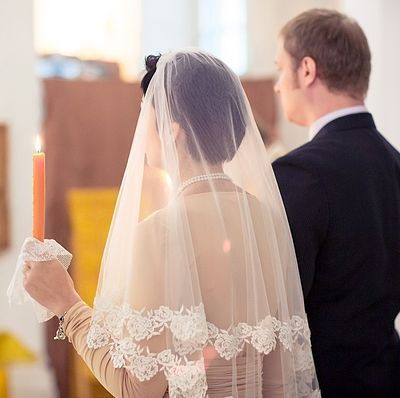
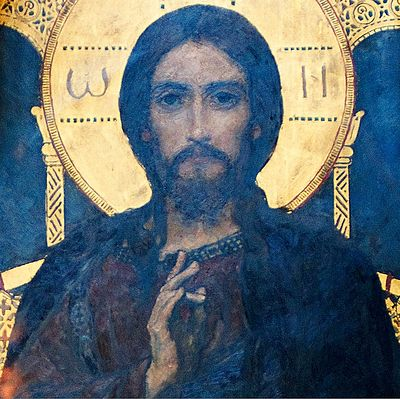

Vertushka Demo Page
Cхим. Феодосия: «Живите в мире, оставайтесь с Господом Богом!»
«Живите в мире, оставайтесь с Господом Богом!»
Памяти схимонахини Феодосии (Косоротихиной)
Ольга Орлова
Матушка парализована, а у тебя чувство, будто тебя обняли и воодушевили. Всех она любила. И всех помнила. Даже если к ней один раз человек приезжал, помнила потом всю жизнь и молилась за него.

«Настоящая любовь — без гари»
Свящ. Николай Несправа о молодом поколении и создании семьи
«Настоящая любовь — без гари»
Священник Николай Несправа о молодом поколении и создании семьи
В основе жизни молодых людей должны быть духовные ценности, потому что не бывает иных путей достижения человеком полноты счастья.
Апостольские наставления для православных «юзеров»
Антоний Дулевич
Апостольские наставления для православных «юзеров»
Антоний Дулевич
Глядя на безобразные диалоги христиан в интернете, становится стыдно и печально. Можно ли было увидеть такую переписку у святых? Нет.
Еще раз о цели жизни
Прот. Андрей Овчинников
Еще раз о цели жизни
Протоиерей Андрей Овчинников
Душа без благодати тоскует и мучается, человеку плохо и одиноко. Не спешите бежать к психологу и принимать антидепрессанты. Душе поможет не это. А что же?

Кто Главный?
Сергей Комаров
Кто Главный?
Сергей Комаров
Бывает, верующий человек прочитал много разных книг и статей, но Евангелие – ни разу. Или, например, дома у христианина целая галерея икон, а лик Христов оказывается где-то в дальнем углу.